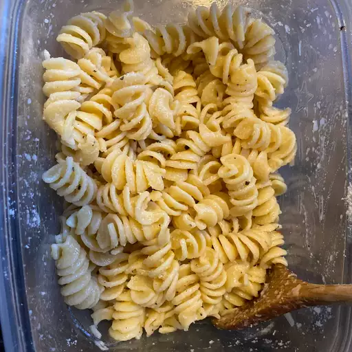

Buttered Noodles

Saucy, buttered noodles are simple to make and perfect to serve either as-is or alongside steak, chicken, or meatballs. Butter, Parmesan cheese, salt, and pepper are all you need for this quick and easy, kid-friendly dish, although fresh herbs and a little lemon juice could be added to amp up the flavor. It's such a delicious recipe, yet I get many questions on how to make it.
Ingredients
- Noodles: This recipe calls for fettuccine noodles.
- Butter: You can use salted or unsalted butter. Since you'll add more salt at the end, you might want to opt for unsalted (depending on your taste, of course).
- Parmesan: Grated Parmesan cheese takes this dish up a notch. Buttered noodles don't technically require cheese, so you can leave it out if you want.
- Salt and Pepper: Finish off this easy buttered noodles recipe with salt and ground black pepper.
Steps
- Boil the fettuccine in lightly salted water until it's tender, yet still firm.
- Drain the pasta in a colander, then return it to the pot.
- Mix butter, cheese, salt, and pepper into the cooked noodles until all the ingredients are evenly combined.